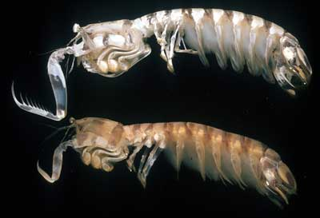
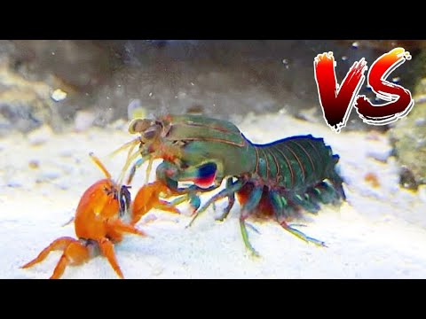
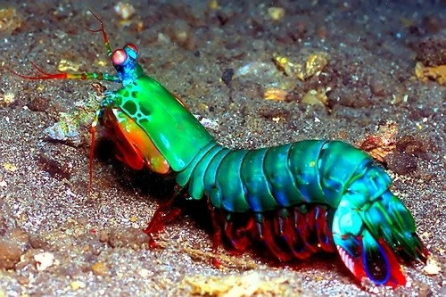

Informações gerais a respeito do Stomatopoda.
| Nome científico | Reino | Filo | Subfilo | Classe | Subclasse | Ordem |
|---|---|---|---|---|---|---|
| Odontodactylus scyllarus | Animalia | Arthropoda | Crustacea | Malacostraca | Hoplocarida | Stomatopoda Latreille, 1817 |
Silheta característica
Além das patas, elas apresentam uma silhueta característica, devido ao grande comprimento aparentemente de seu abdómen. Os ovos ficam ligados por uma massa gelatinosa que a mãe carrega contra o ventre até que eclodem, limpando-os sem parar.
Soco voraz
As maiores esmagadoras, tais como exemplares de Odontodactylus scyllarus, são capazes de desferir um dos mais rápidos e violentos golpes do reino animal, um soco que pode apresentar a velocidade de um tiro calibre .22 (equivalente a 720km/h) e uma força de impacto de 60 kg/cm². Essa força esmagadora é a responsável pelo seu título de "lagosta-boxeadora" e é capaz de facilmente quebrar a carapaça de um caranguejo, as conchas duras e calcificadas de gastrópodes ou até mesmo quebrar o vidro reforçado de um aquário.
Visão diferenciada
Esses animais possuem o mais complexo sistema de visão de cores do mundo animal, porque eles podem ver 16 cores primárias, por possuírem 16 pigmentos diferentes em sua retina. Como cada cone pode ver cerca de 100 cores, os estomatópodes são capazes de ver 1024 cores, ou seja, 1 septilhão de cores. Em comparação, o olho humano vê 106 cores, ou seja, 1 milhão de cores apenas. A visão dos estomatópodes é sensível à luz ultravioleta, mas ainda é desconhecido se ela pode distinguir a luz infravermelha.
